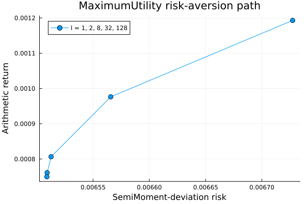
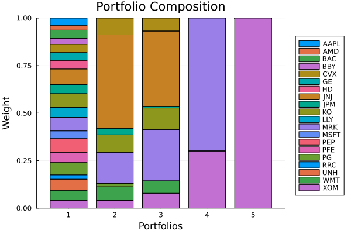
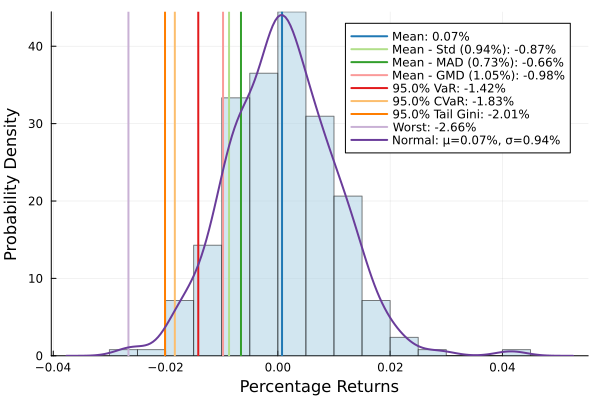
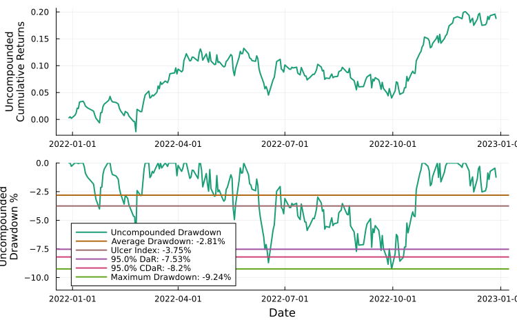
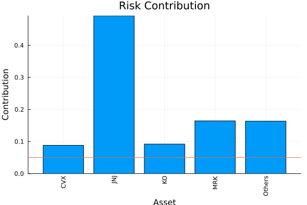

The source files can be found in examples/.
MeanRisk objectives
MeanRisk is the workhorse optimiser: it casts portfolio selection as an explicit trade-off between expected return and risk, and an objective function decides which point on that trade-off you get. The same estimator, prior and risk measure can produce four very different portfolios depending on the objective:
MinimumRisk— ignore return, take the least-risk portfolio.MaximumReturn— ignore risk, take the highest-return portfolio (a corner solution).MaximumRatio— maximise the risk-adjusted ratio (return over risk, net of the risk-free rate) — the tangency portfolio.MaximumUtility— maximisereturn − l · risk, where the risk-aversionldials continuously between the return-seeking and risk-averse ends.
This page runs all four against a common benchmark, confirms each does what it claims, and shows how MaximumUtility's risk-aversion parameter sweeps between the extremes.
MeanRisk is the workhorse optimiser: reach for it whenever you want to express a portfolio as an explicit trade-off between expected return and risk and let a single objective pick the point — minimise risk, maximise return, maximise the risk-adjusted ratio, or maximise a risk-averse utility. If you instead want to allocate risk itself rather than trade it against return, see RiskBudgeting; if you want the whole trade-off curve rather than one point, see the efficient-frontier example.
using PortfolioOptimisers, PrettyTables# Format for pretty tables.tsfmt = (v, i, j) -> begin if j == 1 return Date(v) else return v endend;resfmt = (v, i, j) -> begin if j == 1 return v else return isa(v, Number) ? "$(round(v*100, digits=3)) %" : v endend;1. ReturnsResult data
We use the same S&P 500 slice as the other optimiser examples.
using CSV, TimeSeries, DataFramesX = TimeArray(CSV.File(joinpath(@__DIR__, "..", "SP500.csv.gz")); timestamp = :Date)[(end - 252):end]pretty_table(X[(end - 5):end]; formatters = [tsfmt])# Compute the returnsrd = prices_to_returns(X)ReturnsResult
nx ┼ 20-element Vector{String}
X ┼ 252×20 Matrix{Float64}
nf ┼ nothing
F ┼ nothing
nb ┼ nothing
B ┼ nothing
ts ┼ 252-element Vector{Date}
iv ┼ nothing
ivpa ┼ nothing
nz ┼ nothing
Z ┴ nothing
2. The four objectives
We will hold the risk measure fixed and vary only the objective. For the risk measure we reach for the semi–standard deviation — and here we meet a consequence of the package's design philosophy: an entire class of risk measures is expressed as a single LowOrderMoment parametrised by an internal algorithm. SemiMoment–standard deviation is the second lower partial moment (SemiMoment()) rendered as a second-order cone expression (SOCRiskExpr).
using Clarabelslv = Solver(; name = :clarabel1, solver = Clarabel.Optimizer, settings = Dict("verbose" => false), check_sol = (; allow_local = true, allow_almost = true))r = LowOrderMoment(; alg = SecondMoment(; alg1 = SemiMoment(), alg2 = SOCRiskExpr()))LowOrderMoment
settings ┼ RiskMeasureSettings
│ scale ┼ Float64: 1.0
│ ub ┼ nothing
│ rke ┴ Bool: true
w ┼ nothing
mu ┼ nothing
alg ┼ SecondMoment
│ ve ┼ SimpleVariance
│ │ me ┼ nothing
│ │ w ┼ nothing
│ │ corrected ┴ Bool: true
│ alg1 ┼ SemiMoment()
│ alg2 ┴ SOCRiskExpr()
Since every optimisation runs on the same data, we precompute the prior statistics once with EmpiricalPrior and pass the result to JuMPOptimiser, so they are not recomputed on every call.
pr = prior(EmpiricalPrior(), rd)opt = JuMPOptimiser(; pe = pr, slv = slv)JuMPOptimiser
pe ┼ LowOrderPrior
│ X ┼ 252×20 Matrix{Float64}
│ o_X ┼ nothing
│ mu ┼ 20-element Vector{Float64}
│ sigma ┼ 20×20 Matrix{Float64}
│ chol ┼ nothing
│ w ┼ nothing
│ ens ┼ nothing
│ kld ┼ nothing
│ ow ┼ nothing
│ rr ┼ nothing
│ fpr ┼ nothing
│ Z ┴ nothing
slv ┼ Solver
│ name ┼ Symbol: :clarabel1
│ solver ┼ UnionAll: Clarabel.MOIwrapper.Optimizer
│ settings ┼ Dict{String, Bool}: Dict{String, Bool}("verbose" => 0)
│ check_sol ┼ @NamedTuple{allow_local::Bool, allow_almost::Bool}: (allow_local = true, allow_almost = true)
│ add_bridges ┴ Bool: true
wb ┼ WeightBounds
│ lb ┼ Float64: 0.0
│ ub ┴ Float64: 1.0
bgt ┼ Float64: 1.0
sbgt ┼ nothing
gbgt ┼ nothing
xbgt ┼ Bool: false
lt ┼ nothing
st ┼ nothing
lcse ┼ nothing
cte ┼ nothing
gcarde ┼ nothing
sgcarde ┼ nothing
smtx ┼ nothing
sgmtx ┼ nothing
slt ┼ nothing
sst ┼ nothing
sglt ┼ nothing
sgst ┼ nothing
tn ┼ nothing
fees ┼ nothing
sets ┼ nothing
tr ┼ nothing
ple ┼ nothing
ret ┼ ArithmeticReturn
│ settings ┼ JuMPReturnsSettings
│ │ scale ┼ Float64: 1.0
│ │ lb ┼ nothing
│ │ rte ┼ Bool: true
│ │ fee ┼ Bool: true
│ │ mic ┴ Bool: true
│ ucs ┼ nothing
│ mu ┴ nothing
sca ┼ SumScalariser()
ccnt ┼ nothing
cobj ┼ nothing
sc ┼ Int64: 1
so ┼ Int64: 1
ss ┼ nothing
card ┼ nothing
scard ┼ nothing
l2c ┼ nothing
lpc ┼ nothing
linfc ┼ nothing
l1 ┼ nothing
l2 ┼ nothing
lp ┼ nothing
linf ┼ nothing
brt ┼ Bool: false
x_src ┼ Symbol: :prior
z_src ┼ Symbol: :data
strict ┴ Bool: false
Passing pe = pr — the result of prior(...) — fixes the statistics once and reuses them on every optimise call, which is why we need not pass the returns data again. But you can instead hand the optimiser the estimator itself, pe = EmpiricalPrior(), and call optimise(model, rd); the prior is then recomputed from whatever data the optimiser is given. Most examples here precompute for speed because they solve repeatedly on one fixed slice, but the estimator form is the one to reach for whenever the data changes underneath the optimiser:
- Cross-validation refits on each training fold, so it requires the estimator form — a precomputed result (fit on the whole sample) would leak the test data into training, and is therefore disallowed.
- Meta-optimisers (
Stacking,NestedClustered) feed their outer optimiser synthetic returns assembled from the inner solves, where a precomputed asset-level prior is meaningless; that slot takes an estimator.
Both are shown in the meta-optimisers and subset resampling / cross-validation examples.
Now the four objectives. Only the obj field changes — same prior, same risk measure, same optimiser.
# Minimum riskmr1 = MeanRisk(; r = r, obj = MinimumRisk(), opt = opt)# Maximum utility (default risk aversion l = 2)mr2 = MeanRisk(; r = r, obj = MaximumUtility(), opt = opt)# Maximum risk-adjusted ratio, risk-free rate of 4.2/100/252rf = 4.2 / 100 / 252mr3 = MeanRisk(; r = r, obj = MaximumRatio(; rf = rf), opt = opt)# Maximum returnmr4 = MeanRisk(; r = r, obj = MaximumReturn(), opt = opt)MeanRisk
opt ┼ JuMPOptimiser
│ pe ┼ LowOrderPrior
│ │ X ┼ 252×20 Matrix{Float64}
│ │ o_X ┼ nothing
│ │ mu ┼ 20-element Vector{Float64}
│ │ sigma ┼ 20×20 Matrix{Float64}
│ │ chol ┼ nothing
│ │ w ┼ nothing
│ │ ens ┼ nothing
│ │ kld ┼ nothing
│ │ ow ┼ nothing
│ │ rr ┼ nothing
│ │ fpr ┼ nothing
│ │ Z ┴ nothing
│ slv ┼ Solver
│ │ name ┼ Symbol: :clarabel1
│ │ solver ┼ UnionAll: Clarabel.MOIwrapper.Optimizer
│ │ settings ┼ Dict{String, Bool}: Dict{String, Bool}("verbose" => 0)
│ │ check_sol ┼ @NamedTuple{allow_local::Bool, allow_almost::Bool}: (allow_local = true, allow_almost = true)
│ │ add_bridges ┴ Bool: true
│ wb ┼ WeightBounds
│ │ lb ┼ Float64: 0.0
│ │ ub ┴ Float64: 1.0
│ bgt ┼ Float64: 1.0
│ sbgt ┼ nothing
│ gbgt ┼ nothing
│ xbgt ┼ Bool: false
│ lt ┼ nothing
│ st ┼ nothing
│ lcse ┼ nothing
│ cte ┼ nothing
│ gcarde ┼ nothing
│ sgcarde ┼ nothing
│ smtx ┼ nothing
│ sgmtx ┼ nothing
│ slt ┼ nothing
│ sst ┼ nothing
│ sglt ┼ nothing
│ sgst ┼ nothing
│ tn ┼ nothing
│ fees ┼ nothing
│ sets ┼ nothing
│ tr ┼ nothing
│ ple ┼ nothing
│ ret ┼ ArithmeticReturn
│ │ settings ┼ JuMPReturnsSettings
│ │ │ scale ┼ Float64: 1.0
│ │ │ lb ┼ nothing
│ │ │ rte ┼ Bool: true
│ │ │ fee ┼ Bool: true
│ │ │ mic ┴ Bool: true
│ │ ucs ┼ nothing
│ │ mu ┴ nothing
│ sca ┼ SumScalariser()
│ ccnt ┼ nothing
│ cobj ┼ nothing
│ sc ┼ Int64: 1
│ so ┼ Int64: 1
│ ss ┼ nothing
│ card ┼ nothing
│ scard ┼ nothing
│ l2c ┼ nothing
│ lpc ┼ nothing
│ linfc ┼ nothing
│ l1 ┼ nothing
│ l2 ┼ nothing
│ lp ┼ nothing
│ linf ┼ nothing
│ brt ┼ Bool: false
│ x_src ┼ Symbol: :prior
│ z_src ┼ Symbol: :data
│ strict ┴ Bool: false
r ┼ LowOrderMoment
│ settings ┼ RiskMeasureSettings
│ │ scale ┼ Float64: 1.0
│ │ ub ┼ nothing
│ │ rke ┴ Bool: true
│ w ┼ nothing
│ mu ┼ nothing
│ alg ┼ SecondMoment
│ │ ve ┼ SimpleVariance
│ │ │ me ┼ nothing
│ │ │ w ┼ nothing
│ │ │ corrected ┴ Bool: true
│ │ alg1 ┼ SemiMoment()
│ │ alg2 ┴ SOCRiskExpr()
obj ┼ MaximumReturn()
wi ┼ nothing
fb ┴ nothing
We optimise each. Because the prior is precomputed, we do not pass the returns data. For a reference point we also compute an InverseVolatility benchmark — a naive, solver-free allocation that ignores both objective and expected returns.
res1 = optimise(mr1)res2 = optimise(mr2)res3 = optimise(mr3)res4 = optimise(mr4)res0 = optimise(InverseVolatility(; pe = pr))NaiveOptimisationResult
pr ┼ LowOrderPrior
│ X ┼ 252×20 Matrix{Float64}
│ o_X ┼ nothing
│ mu ┼ 20-element Vector{Float64}
│ sigma ┼ 20×20 Matrix{Float64}
│ chol ┼ nothing
│ w ┼ nothing
│ ens ┼ nothing
│ kld ┼ nothing
│ ow ┼ nothing
│ rr ┼ nothing
│ fpr ┼ nothing
│ Z ┴ nothing
wb ┼ WeightBounds
│ lb ┼ 20-element StepRangeLen{Float64, Base.TwicePrecision{Float64}, Base.TwicePrecision{Float64}, Int64}
│ ub ┴ 20-element StepRangeLen{Float64, Base.TwicePrecision{Float64}, Base.TwicePrecision{Float64}, Int64}
retcode ┼ OptimisationSuccess
│ res ┴ nothing
w ┼ 20-element Vector{Float64}
fb ┴ nothing
The weights side by side. Reading left to right, the benchmark spreads evenly, minimum-risk hugs the low-volatility names, and maximum-return collapses onto the single highest-return asset.
pretty_table(DataFrame(; :assets => rd.nx, :benchmark => res0.w, :MinimumRisk => res1.w, :MaximumUtility => res2.w, :MaximumRatio => res3.w, :MaximumReturn => res4.w); formatters = [resfmt])┌────────┬───────────┬─────────────┬────────────────┬──────────────┬───────────────┐
│ assets │ benchmark │ MinimumRisk │ MaximumUtility │ MaximumRatio │ MaximumReturn │
│ String │ Float64 │ Float64 │ Float64 │ Float64 │ Float64 │
├────────┼───────────┼─────────────┼────────────────┼──────────────┼───────────────┤
│ AAPL │ 4.004 % │ 0.0 % │ 0.0 % │ 0.0 % │ 0.0 % │
│ AMD │ 2.332 % │ 0.0 % │ 0.0 % │ 0.0 % │ 0.0 % │
│ BAC │ 4.39 % │ 0.0 % │ 0.0 % │ 0.0 % │ 0.0 % │
│ BBY │ 3.143 % │ 0.0 % │ 0.0 % │ 0.0 % │ 0.0 % │
│ CVX │ 4.326 % │ 8.817 % │ 6.884 % │ 0.0 % │ 0.0 % │
│ GE │ 4.087 % │ 0.0 % │ 0.0 % │ 0.0 % │ 0.0 % │
│ HD │ 4.55 % │ 0.0 % │ 0.0 % │ 0.0 % │ 0.0 % │
│ JNJ │ 8.175 % │ 49.192 % │ 39.727 % │ 0.0 % │ 0.0 % │
│ JPM │ 4.771 % │ 3.414 % │ 0.689 % │ 0.0 % │ 0.0 % │
│ KO │ 7.239 % │ 9.206 % │ 11.461 % │ 0.0 % │ 0.0 % │
│ LLY │ 5.224 % │ 0.0 % │ 0.0 % │ 0.0 % │ 0.0 % │
│ MRK │ 7.143 % │ 16.429 % │ 26.96 % │ 69.998 % │ 0.0 % │
│ MSFT │ 4.046 % │ 0.0 % │ 0.0 % │ 0.0 % │ 0.0 % │
│ PEP │ 7.32 % │ 0.0 % │ 0.0 % │ 0.0 % │ 0.0 % │
│ PFE │ 5.274 % │ 0.0 % │ 0.0 % │ 0.0 % │ 0.0 % │
│ PG │ 6.482 % │ 1.722 % │ 0.0 % │ 0.0 % │ 0.0 % │
│ RRC │ 2.263 % │ 0.0 % │ 0.0 % │ 0.0 % │ 0.0 % │
│ UNH │ 5.843 % │ 0.0 % │ 0.0 % │ 0.0 % │ 0.0 % │
│ WMT │ 5.329 % │ 7.142 % │ 6.463 % │ 0.0 % │ 0.0 % │
│ XOM │ 4.058 % │ 4.078 % │ 7.816 % │ 30.002 % │ 100.0 % │
└────────┴───────────┴─────────────┴────────────────┴──────────────┴───────────────┘3. Risk aversion: tuning MaximumUtility
MinimumRisk and MaximumReturn are the two extremes of the trade-off. MaximumUtility interpolates between them: it maximises return − l · risk, so the risk-aversion l is the dial. As l → 0 utility chases return (toward the maximum-return corner); as l grows large the risk term dominates (toward the minimum-risk portfolio). The default is l = 2.
We sweep a range of l and read off the realised risk and return of each portfolio.
lambdas = [1, 2, 8, 32, 128]util = [optimise(MeanRisk(; r = r, obj = MaximumUtility(; l = l), opt = opt)) for l in lambdas]sweep = map(zip(lambdas, util)) do (l, res) rk, rt, rr = expected_risk_ret_ratio(res.r, res.ret, res.w, res.pr; sca = res.sca, rf = rf) return (l, rk, rt, rr)endpretty_table(DataFrame(; Symbol("risk aversion l") => [s[1] for s in sweep], :risk => [s[2] for s in sweep], :return => [s[3] for s in sweep], :ratio => [s[4] for s in sweep]); formatters = [resfmt], title = "MaximumUtility: higher l ⇒ lower risk and lower return")MaximumUtility: higher l ⇒ lower risk and lower return
┌─────────────────┬─────────┬─────────┬──────────┐
│ risk aversion l │ risk │ return │ ratio │
│ Int64 │ Float64 │ Float64 │ Float64 │
├─────────────────┼─────────┼─────────┼──────────┤
│ 1 │ 0.673 % │ 0.119 % │ 15.256 % │
│ 2 │ 0.657 % │ 0.098 % │ 12.333 % │
│ 8 │ 0.651 % │ 0.081 % │ 9.826 % │
│ 32 │ 0.651 % │ 0.076 % │ 9.135 % │
│ 128 │ 0.651 % │ 0.075 % │ 8.958 % │
└─────────────────┴─────────┴─────────┴──────────┘Both risk and return fall monotonically as l rises — the portfolio slides down the frontier from the return-seeking end toward the minimum-risk end. Plotting the realised (risk, return) of each step traces that path explicitly.
using StatsPlots, GraphRecipesplot([s[2] for s in sweep], [s[3] for s in sweep]; seriestype = :path, marker = (:circle, 5), xlabel = "SemiMoment-deviation risk", ylabel = "Arithmetic return", title = "MaximumUtility risk-aversion path", label = "l = " * join(string.(lambdas), ", "))
4. Confirming the objectives
To check each objective did what it says on the tin, we compute the risk, return and risk-return ratio of every portfolio. There are individual functions (expected_risk, expected_return, expected_ratio), but expected_risk_ret_ratio returns all three at once, which is what we use here.
Any function that computes the expected portfolio return needs to know which return type to use; we stay consistent with the return measure used in each optimisation.
A result carries everything needed to answer that question itself. res.r is the risk measure the optimisation ran under and res.ret the return term, both stored resolved — a deferred estimator has already been fitted, and a slot the caller left unstated has already taken the prior's field. res.sca is the scalariser. So the whole call can be read off the result:
expected_risk_ret_ratio(res.r, res.ret, res.w, res.pr; sca = res.sca, rf = rf)That is the route to prefer. Naming the measure by hand still works, but the figure then matches the optimisation only if we name the same measure and the same scalariser — and fees and rf carry the same responsibility. The benchmark below is the exception that shows the rule: a naive optimisation resolves no measure and no return term, so it has neither r nor ret to hand back and we must name both ourselves.
rk1, rt1, rr1 = expected_risk_ret_ratio(res1.r, res1.ret, res1.w, res1.pr; sca = res1.sca, rf = rf);rk2, rt2, rr2 = expected_risk_ret_ratio(res2.r, res2.ret, res2.w, res2.pr; sca = res2.sca, rf = rf);rk3, rt3, rr3 = expected_risk_ret_ratio(res3.r, res3.ret, res3.w, res3.pr; sca = res3.sca, rf = rf);rk4, rt4, rr4 = expected_risk_ret_ratio(res4.r, res4.ret, res4.w, res4.pr; sca = res4.sca, rf = rf);rk0, rt0, rr0 = expected_risk_ret_ratio(r, ArithmeticReturn(), res0.w, res0.pr; rf = rf);The table confirms it: MinimumRisk posts the lowest risk, MaximumRatio the highest ratio, and MaximumReturn the highest return — each column extremised on its own objective.
pretty_table(DataFrame(; :obj => [:MinimumRisk, :MaximumUtility, :MaximumRatio, :MaximumReturn, :Benchmark], :rk => [rk1, rk2, rk3, rk4, rk0], :rt => [rt1, rt2, rt3, rt4, rt0], :rr => [rr1, rr2, rr3, rr4, rr0]); formatters = [resfmt])┌────────────────┬─────────┬─────────┬──────────┐
│ obj │ rk │ rt │ rr │
│ Symbol │ Float64 │ Float64 │ Float64 │
├────────────────┼─────────┼─────────┼──────────┤
│ MinimumRisk │ 0.651 % │ 0.075 % │ 8.899 % │
│ MaximumUtility │ 0.657 % │ 0.098 % │ 12.333 % │
│ MaximumRatio │ 0.829 % │ 0.196 % │ 21.611 % │
│ MaximumReturn │ 1.621 % │ 0.264 % │ 15.236 % │
│ Benchmark │ 0.813 % │ 0.025 % │ 0.97 % │
└────────────────┴─────────┴─────────┴──────────┘5. Visualising the objectives
The stacked-bar composition contrasts the five allocations at a glance — note how the return-driven objectives concentrate while the benchmark and minimum-risk books spread out.
plot_stacked_bar_composition([res0, res1, res2, res3, res4], rd)
The return histogram for the minimum-risk portfolio shows the distribution of daily returns and the VaR / CVaR tail-risk markers.
plot_histogram(res1, rd)
Drawdown time series for the minimum-risk portfolio.
plot_drawdowns(res1, rd)
Per-asset semi-standard-deviation risk contribution for the minimum-risk portfolio.
plot_risk_contribution(r, res1, rd)
This page was generated using Literate.jl.